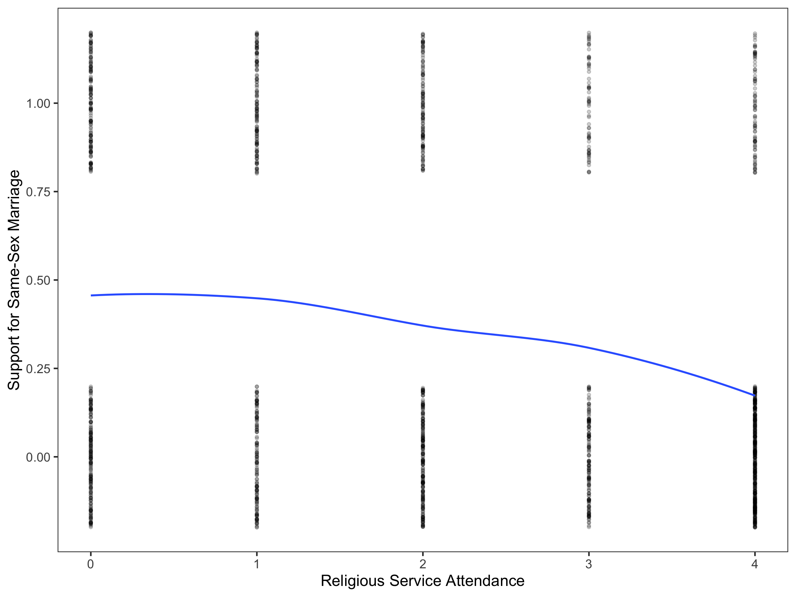
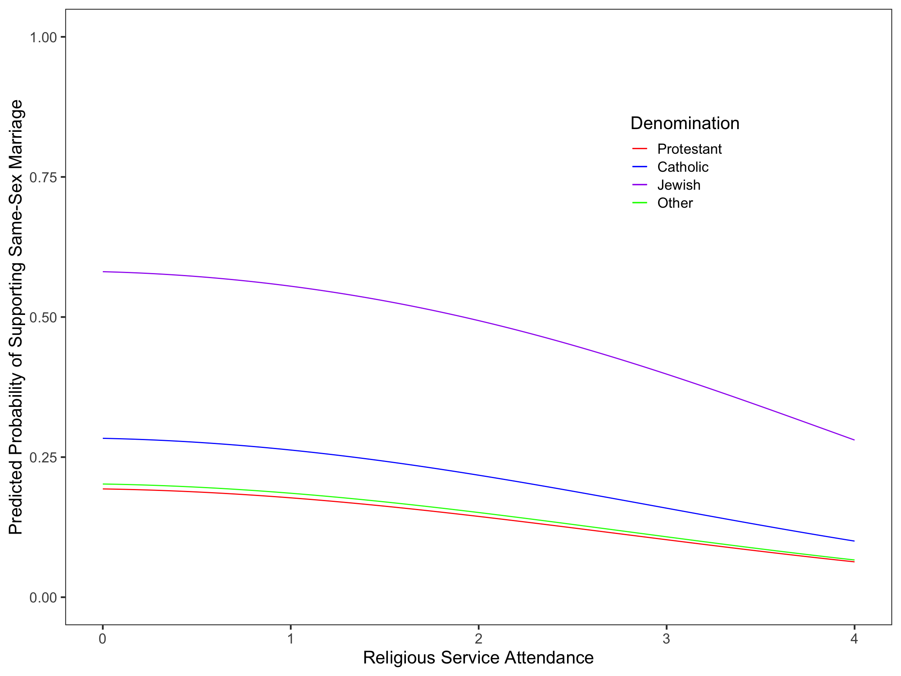

Religious service attendance and type of denomination are thought to be associated with support for or against same-sex marriage. 1746 participants were recruited to take a survey that asked for their denomination, service attendance frequency, and support for or against same-sex marriage (0 = no; 1 = yes). A Likert-scale was used to quantify the service attendance frequency predictor (0 = never; 4 = every week), making it necessary to determine whether this predictor should be treated as continuous or categorical before any regressing can be done. The below figure shows the relationship between support and attendance. Responses are dispersed above and below 0 and 1 on the y-axis to demonstrate that numerous data points were used to create the figure, although all these data points fall on either 0 or 1.

Figure 1: Scatterplot with smoother showing the relationship between religious service attendance and support for same-sex marriage where support for same-sex marriage is 1 and support against same-sex marriage is 0.
The relationship between proportion of support and attendance appears to be linear, meaning the Likert-scale data can be treated as if it were continuous.
Creating and Comparing Models
Five models were created and compared to determine which most appropriately represents the data. The table below shows these models.
Table 1. Five candidate models predicting variation in the log-odds of supporting same-sex marriage. The denomination predictor was dummy coded (Catholic, Jewish, and Other), with Protestant as the reference group.
Model 1
Model 2
Model 3
Model 4
Model 5
Attendance_L
0.14
0.14
-0.04
-0.03
(0.12)
(0.13)
(0.13)
(0.13)
Attendance_Q
-0.12
-0.12
-0.07
-0.07
(0.03)
(0.03)
(0.03)
(0.03)
Catholic
0.77
0.66
0.50
0.50
(0.14)
(0.14)
(0.15)
(0.15)
Jewish
0.38
0.25
0.07
0.06
(0.13)
(0.13)
(0.14)
(0.14)
Other
2.30
1.93
1.76
1.76
(0.52)
(0.53)
(0.55)
(0.55)
Age
-0.02
-0.03
(0.00)
(0.00)
Friends
0.76
0.73
(0.11)
(0.11)
Female
0.33
(0.11)
Intercept
-0.19
-1.07
-0.53
0.36
0.22
(0.10)
(0.10)
(0.14)
(0.24)
(0.25)
Deviance
2120.45
2188.60
2085.59
1967.75
1959.48
AICc
2126.47
2196.62
2085.59
1967.75
1959.48
R2
0.05
0.02
0.07
0.12
0.12
The \(R^2\) value is based on the proportion of reduced deviance from the intercept-only model.
Model 5 was the most appropriate model for the data. Here is its equation.
(Intercept) attendance I(attendance^2) catholic other
1.2482337 0.9656859 0.9318691 1.6521952 1.0568366
jewish age friends female
5.7863631 0.9749867 2.0735231 1.3847902
The predicted odds of supporting same-sex marriage are 1.2 for a male protestant at age 0, which in practical terms is not interpretable because a newborn child will not be for or against same-sex marriage. To make a better conclusion, the average age of a male in this study (47.7) was substituted in for age and the equation was then solved. The results showed that a 47.7 year old protest man who does not have any LGBTQ+ friends or family members and never attends religious services has a probability of supporting same-sex marriage of 0.37, meaning the probability of supporting same-sex marriage is 2.7 times less likely than not supporting for individuals with those characteristics.
All other religious denominations in this study are more likely to support same-sex marriage than protestants (Catholic = 1.6 times more likely; Jewish = 5.9 times more likely; Other = 1.1 times more likely). People who have friends or family members that are LGBTQ+ are 2.1 times more likely to support same-sex marriage than those who do not, and women are 1.4 times as likely to support same-sex marriage as men are. Attending religious service is associated with a decreased probability of supporting same-sex marriage, and this effect of religious service attendance becomes stronger as attendance frequency increases (i.e., the more frequent a person attends religious services, the less likely they support same-sex marriage).
[1] 0.5922417

Figure 2: Generalized linear models showing the relationship between religious service attendance and support for same-sex marriage, for male respondents of mean age (47.7 in the dataset) who do not have LGBTQ+ friends.
Source Code
---title: "Logistic Regression"format: html: fig-width: 12 fig-height: 9editor: visualexecute: echo: falsecode-tools: true---## The Effect of Religion on Personal Support for Same-Sex Marriage[CSV](https://raw.githubusercontent.com/zief0002/bespectacled-antelope/main/data/same-sex-marriage.csv)[Codebook](http://zief0002.github.io/bespectacled-antelope/codebooks/same-sex-marriage.html)### Examining the RelationshipsReligious service attendance and type of denomination are thought to be associated with support for or against same-sex marriage. 1746 participants were recruited to take a survey that asked for their denomination, service attendance frequency, and support for or against same-sex marriage (0 = no; 1 = yes). A Likert-scale was used to quantify the service attendance frequency predictor (0 = never; 4 = every week), making it necessary to determine whether this predictor should be treated as continuous or categorical before any regressing can be done. The below figure shows the relationship between support and attendance. Responses are dispersed above and below 0 and 1 on the y-axis to demonstrate that numerous data points were used to create the figure, although all these data points fall on either 0 or 1.```{r}#| message: false#| echo: false#| warning: false#| label: fig-scatter#| fig-cap: "Scatterplot with smoother showing the relationship between religious service attendance and support for same-sex marriage where support for same-sex marriage is 1 and support against same-sex marriage is 0."#library(AICcmodavg)library(broom)library(corrr)#library(educate) library(ggtext)library(gt)library(kableExtra)library(knitr)library(lmtest)library(patchwork)library(performance)library(stargazer)library(texreg)library(tidyverse)ssm <-read_csv("same-sex-marriage.csv") ssm_prop <- ssm |>group_by(attendance, support) |>summarize(N =n()) |>mutate(Prop = N /sum (N) ) ssm_prop_2 <- ssm |>group_by(denomination, support,) |>summarize(N =n()) |>mutate(Prop = N /sum (N) ) ggplot(data = ssm, aes(x = attendance, y =jitter(support))) +geom_point(alpha =0.2) +geom_smooth(method ='loess', se =FALSE) +theme_bw(base_size =17) +theme(panel.grid =element_blank(),axis.title.x =element_markdown(),axis.title.y =element_markdown(), ) +xlab("Religious Service Attendance") +scale_y_continuous(name ="Support for Same-Sex Marriage",breaks =c(0, 0.25, 0.50, 0.75, 1) )```The relationship between proportion of support and attendance appears to be linear, meaning the Likert-scale data can be treated as if it were continuous.### Creating and Comparing ModelsFive models were created and compared to determine which most appropriately represents the data. The table below shows these models.```{r}#| message: false#| echo: false#| warning: false#| results: asisglm.1_quad <-glm(support ~1+ attendance +I(attendance^2), data = ssm, family =binomial(link ="logit") )ssm <- ssm |>mutate(catholic =if_else(denomination =="Catholic", 1, 0),jewish =if_else(denomination =="Jewish", 1, 0),other =if_else(denomination =="Other", 1, 0) )glm.1_jewish <-glm(support ~1+ catholic + other + jewish, data = ssm, family =binomial(link ="logit"))glm.3<-glm(support ~1+ attendance +I(attendance^2) + catholic + other + jewish, data = ssm, family =binomial(link ="logit"))glm.5<-glm(support ~1+ attendance +I(attendance^2) + catholic + other + jewish + age + friends, data = ssm, family =binomial(link ="logit"))glm.6<-glm(support ~1+ attendance +I(attendance^2) + catholic + other + jewish + age + friends + female, data = ssm, family =binomial(link ="logit"))#aictab(# cand.set = list(glm.1_quad, glm.3, glm.5, glm.6),# modnames = c("Attendance_Q", "Attendance_Q & Denomination", "Age & Friends", "Age, Friends, & Female")#)##################################################### Presenting a Table of Logistic Regression Results##################################################htmlreg(l =list(glm.1_quad, glm.1_jewish, glm.3, glm.5, glm.6),stars =numeric(0), #No p-value starsdigits =2,padding =20, #Add space around columns (you may need to adjust this via trial-and-error)custom.model.names =c("Model 1", "Model 2", "Model 3", "Model 4", "Model 5"), custom.coef.names =c("Intercept", "Attendance_L", "Attendance_Q", "Catholic", "Jewish", "Other", "Age", "Friends", "Female"),reorder.coef =c(2:9, 1), #Put intercept at bottom of tableinclude.aic =FALSE, #Omit AICinclude.bic =FALSE, #Omit BICinclude.nobs =FALSE, #Omit sample sizeinclude.loglik =FALSE, #Omit log-likelihoodcustom.gof.rows =list(AICc =c(2126.47, 2196.62, 2085.59, 1967.75, 1959.48),R2 = (2238.973-c(2120.452, 2188.596, 2085.592, 1967.755, 1959.48)) /2238.973),reorder.gof =c(3, 1, 2),caption ="Table 1. Five candidate models predicting variation in the log-odds of supporting same-sex marriage. The denomination predictor was dummy coded (Catholic, Jewish, and Other), with Protestant as the reference group.",caption.above =TRUE, #Move caption above tableinner.rules =1, #Include line rule before model-level outputouter.rules =1 , #Include line rules around tablecustom.note ="The $R^2$ value is based on the proportion of reduced deviance from the intercept-only model.")```Model 5 was the most appropriate model for the data. Here is its equation.$$\begin{align}\mathrm{Model~5}: \mathrm{ln(\frac{\hat{\pi_i}}{1+\hat{\pi_i}})} &= 0.22 - 0.03(\mathrm{Attendance}_i) - 0.07(\mathrm{Attendance}_i^2) + 0.50(\mathrm{Catholic}_i)\nonumber \\&\quad + 0.06(\mathrm{Jewish}_i) + 1.76(\mathrm{Other}_i) - 0.03(\mathrm{Age}_i) + 0.73(\mathrm{Friends}_i) + 0.33(\mathrm{Female}_i)\end{align}$$ ### Interpretting Model 5To understand the odds associated with Model 5, the equation for the model was back transformed by exponentiating.$$\begin{align}\mathrm{Model~5}: \mathrm{(\frac{\hat{\pi_i}}{1+\hat{\pi_i}})} &= e^{0.22 - 0.03(\mathrm{Attendance}_i) - 0.07(\mathrm{Attendance}_i^2) + 0.50(\mathrm{Catholic}_i)}\nonumber \\&\quad ^{+ 0.06(\mathrm{Jewish}_i) + 1.76(\mathrm{Other}_i) - 0.03(\mathrm{Age}_i) + 0.73(\mathrm{Friends}_i) + 0.33(\mathrm{Female}_i)}\end{align}$$ ```{r}exp(coef(glm.6))```The predicted odds of supporting same-sex marriage are 1.2 for a male protestant at age 0, which in practical terms is not interpretable because a newborn child will not be for or against same-sex marriage. To make a better conclusion, the average age of a male in this study (47.7) was substituted in for age and the equation was then solved. The results showed that a 47.7 year old protest man who does not have any LGBTQ+ friends or family members and never attends religious services has a probability of supporting same-sex marriage of 0.37, meaning the probability of supporting same-sex marriage is 2.7 times less likely than not supporting for individuals with those characteristics. All other religious denominations in this study are more likely to support same-sex marriage than protestants (Catholic = 1.6 times more likely; Jewish = 5.9 times more likely; Other = 1.1 times more likely). People who have friends or family members that are LGBTQ+ are 2.1 times more likely to support same-sex marriage than those who do not, and women are 1.4 times as likely to support same-sex marriage as men are. Attending religious service is associated with a decreased probability of supporting same-sex marriage, and this effect of religious service attendance becomes stronger as attendance frequency increases (i.e., the more frequent a person attends religious services, the less likely they support same-sex marriage).```{r}exp(0.3732402) / (1+exp(0.3732402))``````{r}#| message: false#| echo: false#| warning: false#| label: fig-fits#| fig-cap: "Generalized linear models showing the relationship between religious service attendance and support for same-sex marriage, for male respondents of mean age (47.7 in the dataset) who do not have LGBTQ+ friends."#tidy(glm.6)avg_age <- ssm |>summarize(m =mean(age))# Plot the fitted equations: Probability of supporting same-sex marriageggplot(data = ssm, aes(x = attendance, y = support)) +geom_point(alpha =0) +# Protestantsgeom_function(fun =function(x) {exp((-0.02533145*47.65865) -0.22172950-0.03491663* (x) -0.07056294* x^2) / (1+exp((-0.02533145*47.65865) -0.22172950-0.03491663* (x) -0.07056294* x^2))},linetype ="solid",aes(color ="Protestant") ) +# -.02533145*age # Catholicsgeom_function(fun =function(x) {exp( (-0.02533145*47.65865) +0.50210485-0.22172950-0.03491663* (x) -0.07056294* x^2) / (1+exp((-0.02533145*47.65865) +0.50210485-0.22172950-0.03491663* (x) -0.07056294* x^2))},linetype ="solid",aes(color ="Catholic") ) +# Jewishgeom_function(fun =function(x) {exp((-0.02533145*47.65865) +1.75550397-0.22172950-0.03491663* (x) -0.07056294* x^2) / (1+exp((-0.02533145*47.65865) +1.75550397-0.22172950-0.03491663* (x) -0.07056294* x^2))},linetype ="solid",aes(color ="Jewish") ) +# Othergeom_function(fun =function(x) {exp((-0.02533145*47.65865) +0.05528007-0.22172950-0.03491663* (x) -0.07056294* x^2) / (1+exp((-0.02533145*47.65865) +0.05528007-0.22172950-0.03491663* (x) -0.07056294* x^2))},linetype ="solid",aes(color ="Other") ) +theme_bw(base_size =17) +theme(panel.grid =element_blank(),axis.title.x =element_markdown(),axis.title.y =element_markdown(),legend.position =c(0.75, 0.75) ) +scale_color_manual(name='Denomination',breaks=c('Protestant', 'Catholic', 'Jewish', 'Other'),values=c('Protestant'='red', 'Catholic'='blue', 'Jewish'='purple', 'Other'='green')) +xlab("Religious Service Attendance") +ylab("Predicted Rrobability of Supporting Same-Sex Marriage") +ylim(0, 1)```